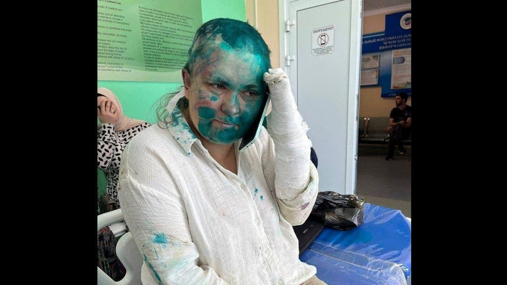

Russian journalist Elena Milashina hospitalized after being 'savagely' beaten in ChechnyaA renowned Russian journalist has been hospitalized after being beaten in Chechnya. Elena Milashina, an award-winning writer and reporter, was "savagely" beaten by a group of attackers while on a trip to Chechnya, a Russian republic. "Elena Milashina's fingers have been broken and she is sometimes losing consciousness. She has bruises all over her body," said human rights group Memorial. Milashina was reportedly beaten while traveling from the airport with lawyer Alexander Nemov. Photos of Milashina in a hospital bed and covered in wounds were published by the human rights group Committee Against Torture. Memorial stated that Milashina and Nemov "were savagely kicked, including in the face, received death threats and were threatened with a gun to the head. Their equipment was taken away and smashed." Russian independent news outlet Novaya Gazeta, a publication that Milashin works for, confirmed the reports of the assault. Novaya Gazeta stated that Milashina was visiting Chechnya to attend the sentencing of Zarema Musayeva, whose three children have been exiled over opposition to Chechen leader Ramzan Kadyrov. Milashina has reported on human rights abuses across Russia, including many incidents in Chechnya. |
 |